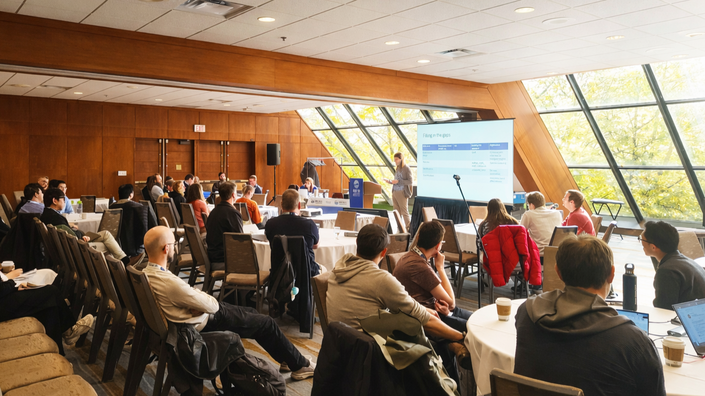

HUPO 2025 workshop: What AI-ready proteomics data should look like
A recap of the HUPO 2025 Bioinformatics Hub workshop on AI-readiness
Ralf Gabriels ![]()
Samuel Wein
Tine Claeys
Introduction
At the HUPO 2025 Bioinformatics Hub session on proteomics AI-readiness, participants split into three parallel discussions: quantification, raw data, and identification, to identify the main hurdles for data reuse within their respective group. This discussion would serve as a practical guide for PSI-AI’s next steps. The consistent theme was that AI-readiness is primarily a data engineering and standards problem: structured data representations, explicit provenance, and machine-checkable metadata matter at least as much as AI model development itself.

Raw data: define “mzPeak minimum information” so reprocessing is feasible
The raw-data group focused on the minimum metadata needed to make peak-level representations reprocessable and interoperable at scale. In light of the development of the new mzPeak format (Van Den Bossche et al. 2025), the discussion centred on capturing (a) per run, essential acquisition context (instrument model and software version; separation technology details including LC gradient/mobile phases/column information; ion mobility or imaging parameters where relevant; ionization type; acquisition mode) and, (b) per scan, the key analytical settings (mass analyzer, scan range, collision energy/type, MS level, precursor and isolation window where applicable). The point was pragmatic: without these elements, it becomes difficult to compare datasets, reproduce processing choices, or support systematic reprocessing—regardless of whether the downstream consumer is a human or an ML pipeline.
Identification: improve interpretability of peptidoforms, scores, and spectrum links
The identification group discussed three recurring challenges: encoding modified sequences in a way that remains machine-interpretable, communicating confidence/uncertainty in a reusable manner, and reliably linking reported identifications back to spectra. Participants noted that ProForma (LeDuc et al. 2022) is already widely used, but that reuse would improve if modifications were consistently represented using stable identifiers when possible, if localization probabilities were included when available, and if the community explored better ways to represent residue-level certainty (including for de novo outputs).
A second theme was that many identification scores and q-values are not purely spectrum-local; they depend on dataset-wide modelling and upstream spectrum processing, complicating comparability and reuse for ML. This motivated calls for better capture of processing algorithms and, where appropriate, sharing the processed peak lists that determined the PSM scores alongside the raw data. In this light, participants highlighted mzSpecLib (Klein et al. 2024) as an important basis for spectral library exchange, while acknowledging the need for more scalable serializations (e.g., Parquet-based) and tooling for very large libraries, especially in DIA contexts. Finally, the group strongly endorsed USI (Eric W. Deutsch et al. 2021) as a foundational mechanism for resolvable spectrum-level references in public repositories, while noting ongoing confusion around commonly used spectrum identifiers (like scan number (MS:1003057) and spectrum title (MS:1000796)) and vendor-specific native IDs (MS:1000767) (also see OpenMS docs for examples).
Quantification: An “mzQuant” container that records how numbers were produced
The quantification group discussed the limitation of downstream reuse by the absence of quantitative tables that preserve the full data processing history. A proposed direction, informally termed mzQuant, is a multi-layer quantitative matrix container inspired by the AnnData format (Virshup et al. 2024), where a declared primary matrix (PSM/peptide/protein/protein group) can be accompanied by additional layers (raw, normalized, batch-corrected, imputed, summarized, statistical outputs). The critical requirement is that each layer carries structured descriptions of methods and assumptions, parameters, and software versions - so results are not just shareable, but auditable and reproducible.
Participants emphasized that the container must embed experimental design in an SDRF-compatible form (Dai et al. 2021) (groups, contrasts, blocking/randomization, and explicit linkage to raw files), and that adoption hinges on low-friction integration with existing and frequently used environments including search engines, statistical tools, etc.
In parallel, the group saw a clear opportunity for AI-based added value of such a format by (i) using LLMs to generate SDRF files based on experimental design; (ii) automatically complete mzQuant by extracting e.g. normalization methods directly from the code; (iii) use the layers of mzQuant and SDRF to automatically generate Materials and Methods sections and describe the computational analysis process in a human readable format.
What PSI-AI takes forward
Across all three tracks, participants repeatedly asked for (i) explicit provenance, (ii) structured, machine-checkable metadata—especially experimental design, (iii) validator tooling with actionable error messages, and (iv) alignment with existing PSI standards rather than parallel reinvention. In collaboration with other PSI working groups and stakeholders, PSI-AI will use these workshop outcomes to prioritize minimal schemas/checklists, CV mappings, reference conversions, and validation/reporting tools, and to package the results as worked examples that can be adopted by software developers, repositories, and researchers.
To join the effort, contact .
References
Reuse
Copyright
Citation
@online{gabriels2026,
author = {Gabriels, Ralf and Wein, Samuel and Claeys, Tine},
title = {HUPO 2025 Workshop: {What} {AI-ready} Proteomics Data Should
Look Like},
date = {2026-02-04},
url = {https://www.psi-ai.org/blog/posts/2026-02-04-hupo-workshop/},
langid = {en-US}
}